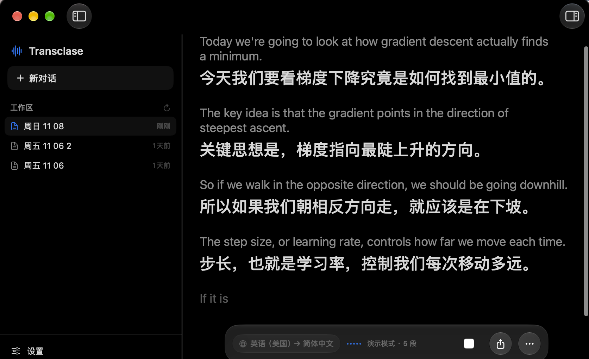
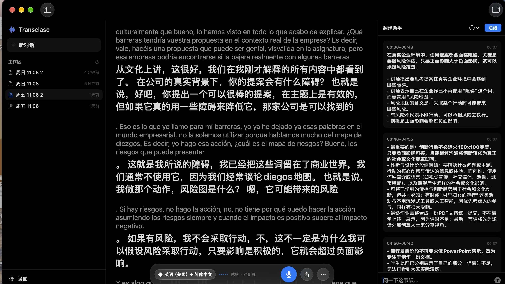

Transclase 在 Mac 上实时生成双语字幕：讲师说外语，你看到原文和中文。 声音不出本机，每节课自动存档，还有 AI 帮你总结重点。

不是又一个翻译 App，而是把一节课从头到尾都照顾到。
原文小字、译文大字，同屏对照。字号可调，也能只留译文。
识别碎片先攒成完整句子再翻，避免“断头句”。遇到句号或停顿才输出。
系统离线、本地 Qwen3、云端 API，随时切换。任意一个挂了会自动回退。
上课时每 1–10 分钟自动总结，也能一键总结或直接提问。
每节课一个 Markdown，逐字稿与要点都在里面。单击回看，双击定位文件。
中英西法德日韩，切换立即生效。语言名也跟随界面语言。

默认用 Apple 的系统离线翻译——最快、零配置。对质量有要求，可以换成云端大模型；想守住隐私，就用本地 Qwen3。
| 引擎 | 速度 | 质量 | 联网 | 上下文 |
|---|---|---|---|---|
| 系统离线翻译 | 最快 · 约 0.3 秒/句 | 中等 | 不需要 | — |
| 本地 Qwen3 | 较慢 · 1.5–3 秒/句 | 中上 | 不需要 | 前两句 |
| 云端 API | 中等 · 0.8–2 秒/句 | 最好 | 需要 | 前两句 |
需要 macOS 26 或更高、Apple Silicon 芯片。首次运行会下载约 400 MB 的语音模型，之后上课全程离线。
curl -fsSL https://raw.githubusercontent.com/JLZ0614/transclase/main/scripts/install.sh | bashbrew install --cask JLZ0614/transclase/transclase不会。语音识别全程在本机完成，音频只在内存里处理。只有当你主动把翻译引擎设为「云端 API」或使用 AI 助手时，识别出的文字才会发送到你配置的服务商。
Apple 的识别模型和翻译语言包是按需下载的，不是系统预装。下载一次之后，上课可以完全离线。
App 没有 Apple 开发者证书，因此无法通过 Gatekeeper。用上面的 curl 命令安装可以绕开隔离标记；如果已经下载了 zip，请在「系统设置 → 隐私与安全性」里点「仍要打开」。
不支持。App 建立在 Apple 的语音识别与翻译框架之上，这些框架只有 macOS 才有。Windows 版本需要完全不同的技术栈。
不能。App 只保存文字（逐字稿与要点），不保存录音。请在上课前确认所在学校与当地法律对课堂记录的要求。
助手走你自己的云端 API Key，费用直接结算给服务商。一节两小时的课通常在几毛钱以内。